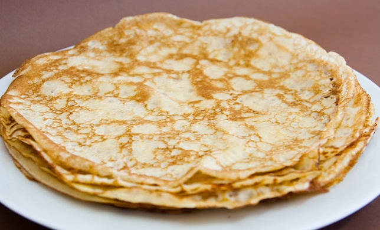
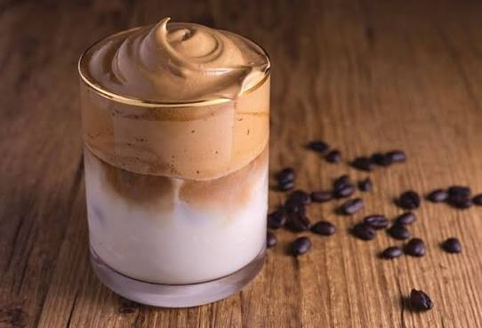

.jpeg)
bolo de chocolate
Ingredientes
- 04 xícaras (chá) de farinha de trigo
- 02 xícaras (chá) de açúcar
- 02 xícaras (chá) de achocolatado
- 02 colheres de sopa de fermento em pó
- 01 pitada de sal
- 03 ovos
- 02 xícaras (chá) de água morna
- 01 xícaras (chá) de óleo
- óleo para untar
- farinha de trigo para polvilhar
Modo de preparo
- Em um recipiente misture 04 xícaras (chá) de farinha de trigo, 02 xícaras (chá) de açúcar, 02 xícaras (chá) de achocolatado, 2 colheres de sopa de fermento em pó e uma pitada de sal.
- Misture bem.
- Apos isso junte os 03 ovos, 02 xícaras (chá) de água morna e 01 xícaras (chá) de óleo.
- misture bem.
- Unte uma forma retangular com óleo e polvilhe farinha de trigo e despeje a massa.
- Leve ao forno preaquecido a 170–180 °C por 30 minutos.
Esse bolo fica fofo e macio, perfeito para tomar um cafe da tarde e aproveitar um tempo em familia.
.jpeg)
Bolo de cenoura
Necessario:
6 ingredientes

Enroladinho de Salsicha Assado
Necessario
6 ingredientes
.jpeg)
Brownie caseiro
Necessario
5 ingredientes

Panqueca
Necessário:
5 ingredientes

Torta de Limão
Necessário:
06ingredientes

bolo de fubá cremoso
Necessário:
8 ingredientes

Cafe cremoso
Necessário:
3 ingredientes